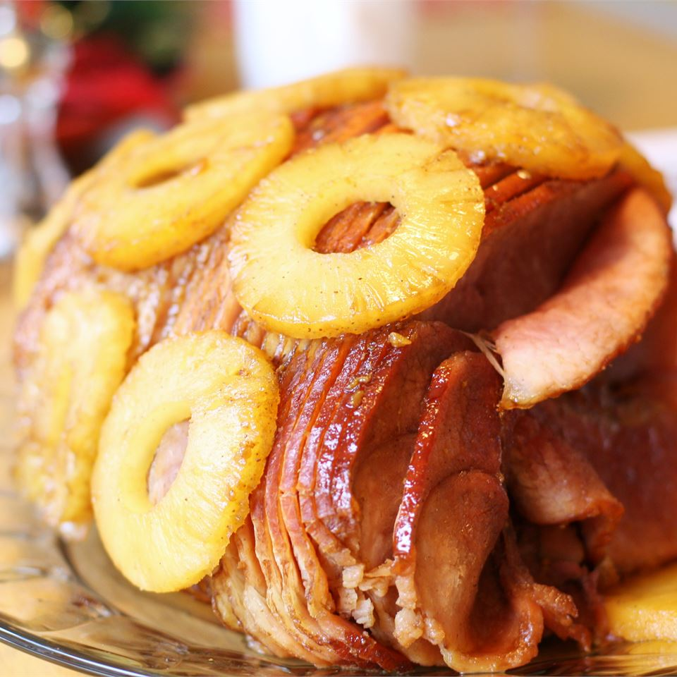

Lasagna Recipe

Ingredients
- 1 (10 pound) fully-cooked, bone-in ham
- 1 ¼ cups packed dark brown sugar
- ⅓ cup pineapple juice
- ⅓ cup honey
- ⅓ large orange, juiced and zested
- 2 tablespoons Dijon mustard
- ¼ teaspoon ground cloves
Directions
- Preheat oven to 325 degrees F (165 degrees C). Place ham in a roasting pan.
- In a small saucepan, combine brown sugar, pineapple juice, honey, orange juice, orange zest, Dijon mustard, and ground cloves. Bring to a boil, reduce heat, and simmer for 5 to 10 minutes. Set aside.
- Bake ham in preheated oven uncovered for 2 hours. Remove ham from oven, and brush with glaze. Bake for an additional 30 to 45 minutes, brushing ham with glaze every 10 minutes.
Preperation
- Prep: 15 mins
- Cook: 2 hrs 45 mins
- Total: 3 hrs
- Servings: 20
- Yield: 1 (10 pound) ham
Nutrition Info (Per Serving)
- Energy: 511 calories
- protein 38.8g
- carbohydrates 19.4g
- fat 30.1g
- cholesterol 111.3mg
- sodium 2171.8mg